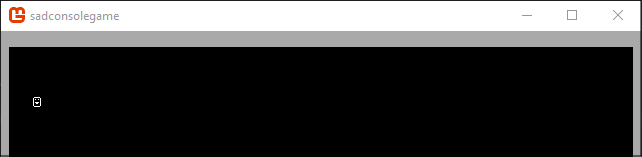

Get Started (4) - Moving a character
In this part of the tutorial you'll learn how to use multiple consoles. Consoles can be attached to other consoles. Consoles can even share cell data between them.
Previous articles in this tutorial:
Prep
Reset the Init() method back to a clean state. Whenever the tutorial talks about resetting the Init() method back to a clean state, it means to replace your existing code with the following code:
static void Init()
{
var console = new Console(80, 25);
SadConsole.Global.CurrentScreen = console;
}
Create a "screen"
When making a game, it's good to think about how you'll group up functionality together. We can call this concept a screen. A screen represents a specific aspect of your game, as it's displayed on the game window. For example, your starting screen would be your game menu, with all animated objects, buttons, and things to create a new game, load a game, configure the game. The game screen may represent the screen the user sees while they are playing the game, a status console, message console, and map console. Grouping the parts of your game into screens is a good way to lay out your game.
Let's create a single screen that, in this tutorial, will represent the game map and player character. Add a new class file to your project named MapScreen.cs and make sure the class is named MapScreen. Inherit from ContainerConsole. Don't forget to import the SadConsole namespace and specify that the type Console is mapped to SadConsole.Console. Both the System and SadConsole namespaces define a type named Console and this fixes the conflict.
using System;
using System.Collections.Generic;
using SadConsole;
using Console = SadConsole.Console;
namespace SadConsoleGame
{
class MapScreen: ContainerConsole
{
}
}
Setup the program's Init method to set the MapScreen type as the current screen.
static void Init()
{
Global.CurrentScreen = new MapScreen();
}
Create a console
Create a new console in the MapScreen type named MapConsole. This is a read-only property that will be set in the constructor.
namespace SadConsoleGame
{
class MapScreen: ContainerConsole
{
public Console MapConsole { get; }
}
}
Add a constructor to the MapScreen that initializes the MapConsole property. This constructor will size the map console to the game window.
class MapScreen: ContainerConsole
{
public Console MapConsole { get; }
public MapScreen()
{
var mapConsoleWidth = (int)((Global.RenderWidth / Global.FontDefault.Size.X) * 1.0);
var mapConsoleHeight = (int)((Global.RenderHeight / Global.FontDefault.Size.Y) * 1.0);
MapConsole = new Console(mapConsoleWidth, mapConsoleHeight);
MapConsole.DrawBox(new Microsoft.Xna.Framework.Rectangle(0, 0, MapConsole.Width, MapConsole.Height), new Cell(Color.White, Color.DarkGray, 0));
MapConsole.Parent = this;
}
}
The code above creates two variables to help size the console. Right now this doesn't do anything except fill 100% of the console. The way this code works is the Global.RenderWidth (or height) is divided by the size of the default font. This gives you the amount of cells that fit on the window vertically (RenderWidth / Size.X) or horizontally (RenderHeight / Size.Y). This is then multiplied by a percentage where 1.0 represents 100% and 0.0 represents 0%. To get the console to only use 50% of the game window, you would use * 0.25.
The MapConsole is created to the size specified by the mapConsoleWidth and mapConsoleHeight variables. A box is then drawn on the console and it is assigned to as a child of the ContainerConsole. You can now run the game and see that you have a visible box the size of the window.
Remove the MapConsole.DrawBox line from your code. This was only there so you can see your console on the screen and how the sizing worked.
Add a movable glyph
Now that we have a console to represent a map, let's look at how we can get a glyph on the screen that can move around. First though, import the Microsoft.Xna.Framework namespace.
using Microsoft.Xna.Framework;
Next, add two properties to the MapScreen class. These will track the player controlled with the keyboard, and set the glyph by which the player is represented. The he PlayerGlyph variable will represent the player's physical appearance. Set the default to 1 which is a smiley face.
class MapScreen: ContainerConsole
{
public Console MapConsole { get; }
public int PlayerGlyph { get; set; } = 1;
}
Next, add a private variable named _playerPosition and a public property named PlayerPosition to expose that property. Leave the set blank for now, but set it to private scope.
class MapScreen: ContainerConsole
{
public Console MapConsole { get; }
public int PlayerGlyph { get; set; } = 1;
private Point _playerPosition;
public Point PlayerPosition
{
get => _playerPosition;
private set
{
}
}
}
For set let's explain what we want to do when a new value comes in.
- Erase the cell on the console where the player is located.
- Set the position to the new value.
- Set the glyph of the player in the new position.
public Point PlayerPosition
{
get => _playerPosition;
private set
{
MapConsole.Clear(_playerPosition.X, _playerPosition.Y);
_playerPosition = value;
MapConsole.SetGlyph(_playerPosition.X, _playerPosition.Y, PlayerGlyph);
}
}
Update the MapScreen constructor to set the player's position:
public MapScreen()
{
var mapConsoleWidth = (int)((Global.RenderWidth / Global.FontDefault.Size.X) * 1.0);
var mapConsoleHeight = (int)((Global.RenderHeight / Global.FontDefault.Size.Y) * 1.0);
MapConsole = new Console(mapConsoleWidth, mapConsoleHeight);
MapConsole.Parent = this;
PlayerPosition = new Point(4, 4);
}
Run the game and you'll see that the player is printed on the console.

The reason that PlayerPosition.Set is private is to prevent code from outside the screen moving the player. You'll see why that is important in the next section.
Keyboard input
Now, let's hook the keyboard input of the container console. If the MapScreen
Conclusion
Now you understand a bit more about parenting works. The next part of the series will explore creating characters on a console and moving them around with the keyboard.
Note
This tutorial series is in progress. The next part of the series has not yet been published.